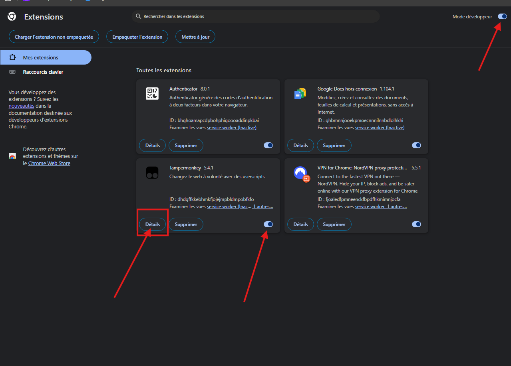
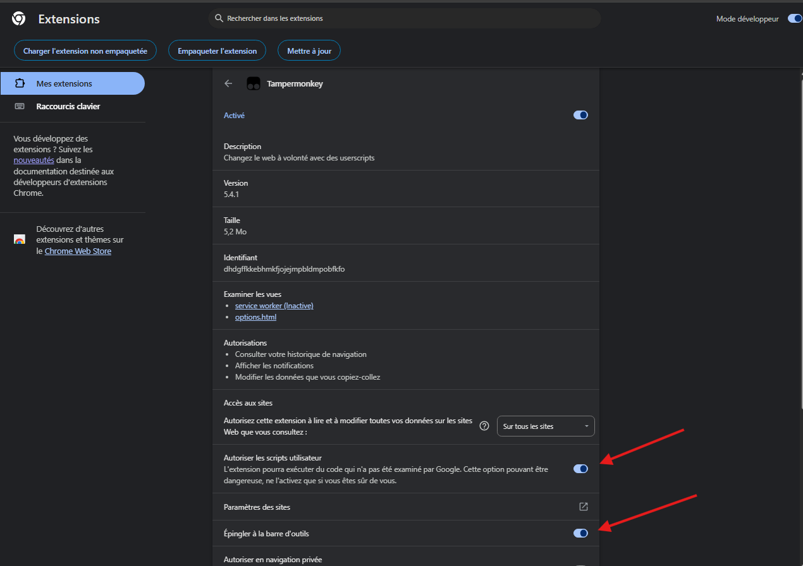
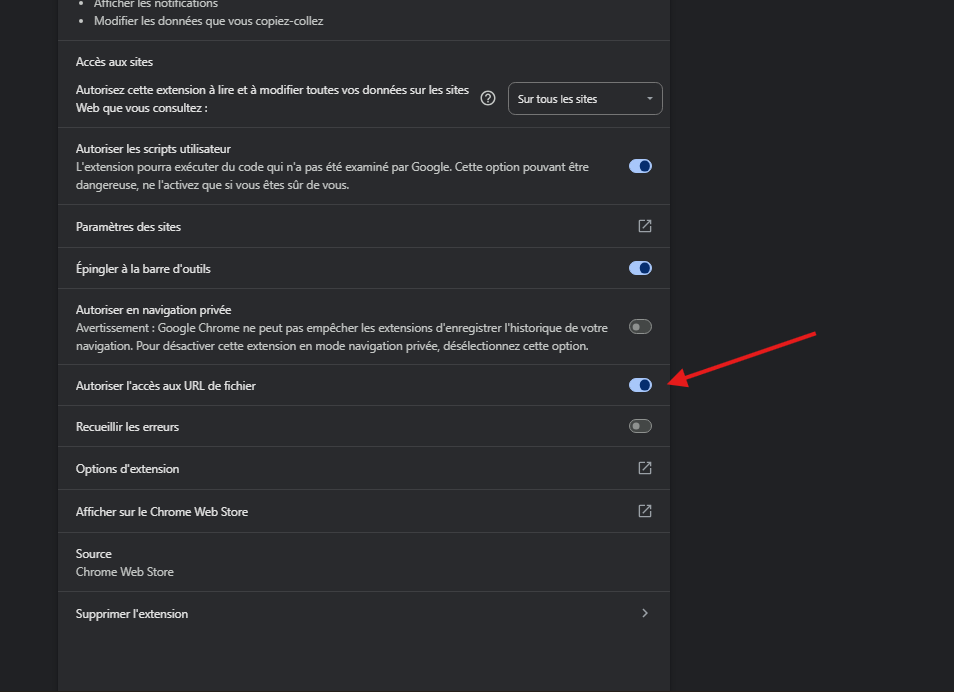

Pour une vitesse d'interception maximale (0ms), nous recommandons l'usage de Google Chrome Canary.
Télécharger Chrome CanaryAjoutez l'extension Tampermonkey à votre navigateur pour gérer le script.

Figure 1 : Installation de l'extension TampermonkeyActivez le Mode Développeur dans vos extensions et autorisez l'accès aux fichiers dans les réglages de Tampermonkey.

Figure 2 : Activation du mode développeur et accès aux URLCliquez sur le bouton ci-dessous pour installer le script. La fenêtre de confirmation Tampermonkey s'ouvrira.

Figure 3 : Page d'installation du script ELITE-CODE-HUNTERRendez-vous sur Shuffle.com. Si l'installation est réussie, le voyant en bas de page affichera :
WSS SÉCURISÉ ●